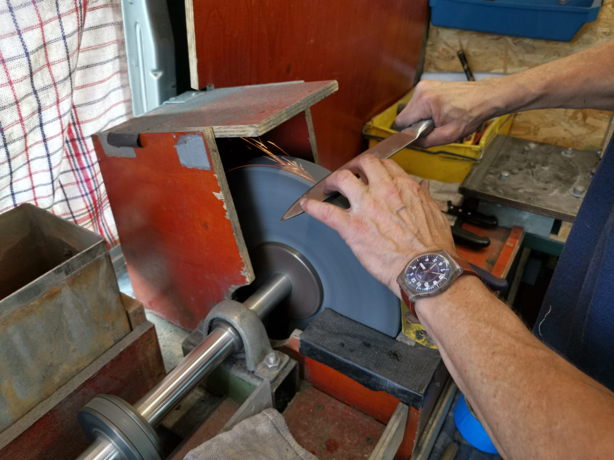
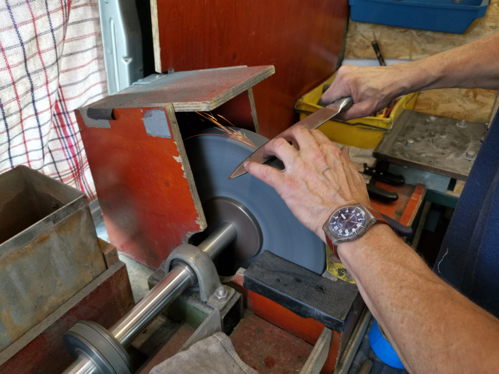

De slijper voor al uw messen.
078 682 4977
info@horecaslijperijbloom.nl

Over ons
Door de kennis en vaardigheid van het uitstekend opgeleide personeel te combineren met de in eigen beheer ontwikkelde slijpapparatuur, heeft Horecaslijperij Bloom een kwalitatief zeer hoogwaardig slijpproces ontwikkeld. Hierdoor hebben wij een gevarieerd en vast klantenbestand met klanten door heel Nederland en Noord België.
 

Onze geschiedenis
In 1985 heeft de heer Bloom, nadat hij een exclusieve opleiding had genoten aan de beroemde Solingen Messerfabrieken in Duitsland, het bedrijf Bloom Staalwaren opgericht. De eerste jaren was hij te vinden op markten met een mobiele slijperij. Maar ook in zijn bedrijfspand was hij actief. In die tijd werd er nog veel zilverwerk verwerkt, waarbij niet alleen geslepen werd maar ook handvaten opnieuw aan het lemmet werden gezet. In 2006 is de het bedrijf verder gegaan onder de huidige naam: 'Horecaslijperij Bloom BV'. Zilverwerk is sindsdien wat naar de achtergrond geraakt.
Inmiddels rijden we met vijf mobiele slijpunits in heel Nederland. Ook kunnen wij u van dienst zijn in ons bedrijfspand in Hendrik Ido Ambacht, waar wij buiten het slijpen, u ook kunnen helpen met het vlakken van snijplanken.